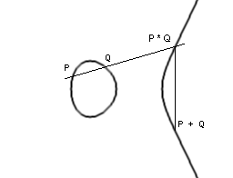

|
Neka je n = p . q, gdje su
p i q prosti brojevi takvi da je
p ≡
q ≡ 3 (mod 4).
Neka je P =
C =
Zn
i definiramo
K = { (n, p, q) : n = pq }. Za K ∈ K definiramo
eK(x) = x2
mod n, |
Ovdje a = √b mod n znači da je a2 ≡ b (mod n). Uvjet p ≡ q ≡ 3 (mod 4) se može izostaviti. No, uz ovaj uvjet je dešifriranje jednostavnije i efikasnije. Postoji i varijanta Rabinovog kriptosustava u kojoj se za šifriranje koristi općenitija kvadratna funkcija x(x + B), gdje je vrijednost B javna. Važno je uočiti da funkcija eK nije injekcija. Naime, ako je w neki od 4 druga korijena iz 1 modulo n (dobiju se primjenom Kineskog teorema o ostatcima na kongruencije x ≡ ± 1 (mod p), x ≡ ± 1 (mod q), onda imamo:
eK(wx) ≡ w2 x2 ≡ x2 ≡ eK(x) mod n.
To znači da se dešifriranje ne može provesti na jedinstven način (osim ako je otvoreni tekst neki smisleni tekst, a to nije slučaj kod razmjene ključeva, za što se kriptosustavi s javnim ključem prvenstveno i koriste). Jedan način za rješavanje ovog problema je da se u otvoreni tekst na umjetan način ubaci izvjesna pravilnost. To se može napraviti npr. tako da se posljednja 64 bita dupliciraju (ponove). Tada možemo očekivati da će samo jedan od 4 kvadratna korijena dati rezultat koji ima zadanu pravilnost. Hugh Williams je 1980. dao modifikaciju Rabinovog kriptosustava kojom je eliminirao ovaj nedostatak.Primjer 3.4: U Rabinovom kriptosustavu s parametrima
(n, p, q) = (437, 19, 23)
dešifrirati šifrat y = 35. Poznato je da je otvoreni tekst prirodan broj x < n kojem su zadnja četiri bita u binarnom zapisu medusobno jednaka.
Najprije trebamo naći kvadratne korijene od 35 modulo 19 i
modulo 23. Budući da je
19 ≡ 23 ≡ 3 (mod 4),
možemo ih naći po formuli
x ≡ ± 4 (mod 19), x ≡ ± 9 (mod 23).
Sustav od dvije linearne konguencijex ≡ a1 (mod m1), x ≡ a2 (mod m2)
se efikasno rješava primjenom Euklidovog algoritma: dobivamo u, v takve da je um1 + vm2 = 1. Tada je
ElGamalov kriptosustav (Taher
ElGamal, 1985)
je zasnovan na teškoći računanja diskretnog logaritma u konačnim
poljima.
| Problem diskretnog logaritma: Neka je (G, *) konačna grupa, α ∈ G, H = { αi : i ≥ 0 } grupa generirana s α, te β ∈ H. Naći jedinstveni cijeli broj a takav da je 0 ≤ a ≤ |H| - 1 i αa = β, gdje je αa = α * α * ... * α (a puta). Taj cijeli broj a se zove diskretni logaritam i označava se s logα β. |
U originalnom ElGamalovom kriptosustavu je (G, *) = (Zp*, ·p), dok je α primitivni korijen modulo p, tj. α ima svojstvo da je { αi : i = 0, 1, ... , p - 1 } = Zp*. To znači da je u ovom slučaju H = G. Najbolji poznati algoritmi za problem diskretnog logaritma u Zp* trebaju
exp(O((log p)1/3 (log log p)2/3))
operacija. Prema tome, ovaj problem je po kompleksnosti vrlo sličan problemu faktorizacije.Definicija ElGamalovog kriptosustava:
|
Neka je p prost broj i
α
∈
Zp*
primitivni korijen modulo p.
Neka je P =
Zp*,
C =
Zp* ×
Zp* i
K = { (p, α, a, β) : β ≡ αa (mod p) }. Vrijednosti p, α, i β su javne, a vrijednost a je tajna.Za K = (p, α, a, β) ∈ K i tajni slučajni broj k ∈ Zp -1 definiramo eK(x, k) = (y1, y2), gdje je y1 = αk mod p i y2 = x βk mod p.Za y1, y2 ∈ Zp* definiramo dK(y1, y2) = y2(y1a)-1 mod p. |
Mogli bi reći da se otvoreni tekst x "zamaskira" množeći s βk. Onaj tko poznaje tajni eksponent a može iz αk izračunati βk i "ukloniti masku".
Da bi eksponent a stvarno bio tajan, prost broj p mora biti dovoljno velik da bi u Zp* problem diskretnog logaritma bio praktički nerješiv. Stoga se danas preporuča korištenje prostih brojeva od oko 1024 bita. Takoder bi red grupe, tj. broj p - 1, trebao imati barem jedan veliki prosti faktor (od barem 160 bitova).
Primjer 3.5: Neka je u ElGamalovom kriptosustavu p = 23, α = 5, a = 17, β = 15. Dešifrirati šifrat (y1, y2) = (17, 6).
Računamo y1a = 1717 ≡ 11 (mod 23). Potom nademo inverz od 11 modulo 23. Dobivamo da je inverz -2 ≡ 21 (mod 23). Konačno izračunamo 6 · 21 mod 23 i dobivamo otvoreni tekst x = 11.
Pored grupa
Zp*,
u ovom kontekstu od interesa su i sljedeće grupe:
ElGamalov kriptosustav u GF(2n)* definira se na sasvim isti način kao u Zp*. Naime, multiplikativna grupa svakog konačnog polja je ciklička. Najbolji poznati algoritmi za problem diskretnog logaritma u GF(2n) trebaju
exp(O(n1/3 (log n)2/3))
operacija. Tako se smatra da je za n > 1000 odgovarajući kriptosustav siguran ukoliko 2n - 1 ima barem jedan veliki prosti faktor.
Neka je p > 3 prost broj. Eliptička krivulja
E : y2 = x3 + ax + b
nad Zp je skup rješenja (x, y) ∈ Zp × Zp kongruencije y2 ≡ x3 + ax + b (mod p), gdje su a, b ∈ Zp takvi da je 4a3 + 27b2 ≠ 0 u Zp, zajedno s točkom O koju zovemo točka u beskonačnosti. Na eliptičkoj krivulji E možemo uvesti operaciju zbrajanja uz koju E postaje abelova grupa. Neka su P = (x1, y1), Q = (x2, y2) iz E. Ako je x1 = x2 i y1 = -y2, onda je po definiciji P + Q = O. Inače, je P + Q = (x3, y3), gdje jex3 = m2 - x1 - x2, y3 = m(x1 - x3) - y1,
m = (y2 - y1) /
(x2 - x1), ako je
P ≠ Q;
m = (3x12 + a) /
(2y1), ako je P = Q.
Geometrijski, zbrajanje možemo interpretirati tako da povučemo pravac kroz P i Q (ako je P = Q, onda povučemo tangentu). Taj pravac siječe E u tri točke: P, Q i recimo P * Q. Tada je P + Q osnosimetrična točka točki P * Q s obzirom na os x.

Sada točku O možemo shvatiti kao treću točku presjeka od E i pravca okomitog na os x.Kako je polovica elemenata iz Zp* jednaka kvadratu nekog elementa iz Zp*, za očekivati je da E ima približno p točaka (ako je točka (x, y) u E, onda je također i točka (x, -y) u E). Preciznije, po Hasseovom teoremu, vrijedi:
p + 1 - 2√p ≤ |E| ≤ p + 1 + 2√p.
Nadalje, E ≃ Zm × Zk i vrijedi k | m i k | p - 1.Navest ćemo jednu varijantu ElGamalovog kriptosustava koja koristi eliptičke krivulje. Zove se Menezes - Vanstoneov kriptosustav. U njemu se eliptičke krivulje koriste samo za "maskiranje", dok su otvoreni tekstovi i šifrati proizvoljni uređeni parovi elemenata iz polja (a ne nužno parovi koji odgovaraju točkama na eliptičkoj krivulji). Kod ovog kriptosustava, šifrirana poruka je (samo) 2 puta dulja od originalne poruke, a ne 4 puta, koliko bi bila kod direktnog prevođenja ElGamalovog kriptusustava na grupu eliptičkih krivulja.
|
Neka je E eliptička krivulja nad
Zp (p > 3 prost),
te H ciklička podgrupa od E generirana s
α.
Neka je K = { (E, α, a, β) : β = aα }. Vrijednosti E, α, i β su javne, a vrijednost a je tajna.Za K = (E, α, a, β) ∈ K i tajni slučajni broj k ∈ Z|H|, te za x = (x1, x2) ∈ Zp* × Zp* definiramo eK(x, k) = (y0, y1, y2), gdje je y0 = kα, (c1, c2) = kβ, y1 = c1x1 mod p, y2 = c2x2 mod p.Za šifrat y = (y0, y1, y2) definiramo dK(y) = (y1(c1)-1 mod p, y2(c2)-1 mod p), gdje je ay0 = (c1, c2). |
Najbolji poznati algoritmi za problem eliptičkog diskretnog logaritma trebaju O(√p) operacija. To pokazuje prednost kriptosustava zasnovanih na eliptičkim krivuljama u odnosu na RSA i ElGamalov kriptosustav. Naime, za postizanje iste sigurnosti kao kod RSA kriptosustava (a za ElGamalov vrijedi isto) s duljinom ključa od 1024 ili 4096 bita (a to su uobičajene vrijednosti), kod eliptičkih krivulja dovoljno je uzeti ključ duljine 160, odnosno 320 bitova. To je osobito važno kod onih primjena (kao što su npr. čip-kartice) kod kojih je prostor za pohranu ključeva vrlo ograničen.
Slično kao kod ElGamalovog kriptosustava, za primjene u kriptografiji, uz eliptičke krivulje nad poljima Zp, važne su i krivulje nad poljima GF(2n). Napomenimo da ovdje (i općenito kod polja karakteristike 2), treba promatrati malo drugačiju jednadžbu, naime
E : y2 + xy = x3 + ax2 + b.
Ideju o tome da bi eliptičke krivulje mogle biti korisne u konstrukciji kriptosustava s javnim ključem prvi su javno iznijeli Neal Koblitz i Victor Miller 1985. godine.
Merkle-Hellmanov kriptosustav (Ralph
Merkle i Martin Hellman, 1978)
za osnovu ima tzv. problem ruksaka. Pretpostavimo da imamo
n predmeta s volumenima v1,
v2, ... , vn
koje želimo staviti u ruksak volumena V. Dakle, želimo naći
podskup J ⊆
{1, 2, ... , n} tako da je
|
Za dani skup {v1, v2,
... , vn} od n prirodnih brojeva i
prirodan broj V, naći niz
m = (ε1,
ε2, ... ,
εn)
od n binarnih znamenaka
ε1v1 + ε2v2 + ... + εnvn = V, ako takav m postoji. |
Poznato je da je ovaj opći problem ruksaka vrlo težak. On spada u tzv. NP-potpune probleme. To, pored ostalog, znači da nije poznat polinomijalni algoritam za njegovo rješavanje. Međutim, specijalni slučaj, tzv. superrastući problem ruksaka, je puno lakši. To je slučaj kad je niz v1, v2, ... , vn rastući i vrijedi vj > v1 + ... + vj -1 za j = 2, 3, ... , n. Primjer superrastućeg niza je niz vi = 2i -1. Tada su εi-ovi upravo binarne znamenke broja V. Jasno je da u slučaju superrastućeg niza, u svakom koraku u ruksak moramo staviti najveći predmet koji u njega stane. Ova činjenica je osnova za Merkle-Hellmanov kriptosustav. Ideja Merkle-Hellmanovog kriptosustava je "zamaskirati" superrastući niz tako da izgleda kao sasvim slučajan niz. Onaj kome je poruka namjenjena zna kako ukloniti masku, pa može pročitati poruku rješavajući supperrastući problem ruksaka. Svi drugi moraju rješavati, puno teži, opći problem ruksaka, pa ne mogu pročitati poruku. "Maskiranje" se provodi modularnim množenjem.
|
Neka je v = (v1, v2, ... ,
vn) superrastući niz prirodnih brojeva, te neka je
p > v1 + ... + vn
prost broj i 1 ≤
a
≤ p - 1.
Za 1 ≤
i ≤ n
definiramo Za K = (v, p, a, t) definiramo eK(x1, ... , xn) = x1t1 + x2t2 + ... + xntn. Za 0 ≤ y ≤ n(p-1) definiramo z = a-1y mod p, riješimo (superrastući) problem ruksaka za skup {v1, ... , vn, z} i tako dobivamoVrijednost t je javna, dok su vrijednosti p, a i v tajne. |
Primjer 3.6: Zadan je Merkle-Hellmanov kriptosustav s parametrima
v = (2, 5, 11, 23, 45, 91), p = 181, a = 111, t = (41, 12, 135, 19, 108, 146).
Dešifrirati šifrat y = 296.Najprije izračunamo inverz od a modulo p (Euklidovim algoritmom). Dobivamo da je inverz 106. Zatim računamo z = 106 · 296 mod 181 = 63. Sada riješimo superrastući problem ruksaka za v i z. Dobivamo da je 63 = 45 + 11 + 5 + 2, pa je otvoreni tekst
(x1, x2, x3, x4, x5, x6) = (1, 1, 1, 0, 1, 0).
Provjera: eK(x1, x2, x3, x4, x5, x6) = t1 + t2 + t3 + t5 = 296.Merkle-Hellmanov kriptosustav je imao jednu vrlo veliku prednost u odnosu na ostale kriptosustave s javnim ključem. Naime, šifranje njime je znatno brže, te je on po brzini bio usporediv s najboljim simetričnim kriptosustavima. No, godine 1982. je uslijedilo razočaranje, kad je Adi Shamir pronašao polinomijalni algoritam za razbijanje Merkle-Hellmanovog kriptosustava. Pokazalo se da se ovako jednostavnim maskiranjem vrlo specijanog niza ipak ne dobiva sasvim slučajan niz. U razbijanju se koriste algoritmi za diofantske aproksimacije (verižni razlomci i LLL-algoritam). Prema tome, ovaj sustav se ne može više smatrati sigurnim kriptosustavom. Ipak, ideja na kojoj je zasnovan je vrlo zanimljiva. Ta ideja je korištenje u dešifriranju nekog jednostavnog specijalnog slučaja nekog teškog (NP-potpunog) problema, s time da se taj specijalni slučaj prikrije tako da izgleda kao opći.
Ova ideja se koristi i u McElieceovom kriptosustavu (Robert McEliece, 1978). Ovdje je NP-potpun problem dekodiranje općih linearnih kodova za ispravljanje grešaka. Kao osnova u ovom kriptosustavu koristi se specijalna klasa tzv. Goppa kodova za koje postoji polinomijalni algoritam za dekodiranje.
Jedan od najzanimljivijih novijih kriptosustava, koji je
još uvijek predmet intenzivnog proučavanja,
je NTRU kriptosustav, koji su 1997. godine predložili
Jeffrey Hoffstein, Jill Pipher i
Joseph Silverman. U ovom se kriptosustavu
kod šifriranja koriste polinomi. Preciznije, koristi se
prsten
Jedna potencijalna, za sada samo teoretska, prednost NTRU kriptosustava u odnosu na RSA je vezana uz pitanje što bi se dogodilo s njihovom sigurnošću ako bi se uspjelo konstruirati kvantna računala. Za razliku od klasičnih računala kod kojih je osnovna jedinica informacije jedan bit (koji može biti 0 ili 1), kvantna računala bi koristila ideje iz kvantne mehanike, te bi kod njih osnovna jedinica informacije - qubit - nosila puno više informacija. Takva računala još nisu praktično realizirana u obliku koji bi bio konkurencija klasičnim računalima, ali takva realizacija nije isključena u doglednoj budućnosti. Stoga se u posljednjih 15-tak godina radi i na algoritmima specijalno dizajniranim baš za takva računala. Jedan od najpoznatih algoritama za kvantna računala je Shorov algoritam koji koristi činjenicu da kvantne metode omogućavaju vrlo brzo računanje perioda periodičnih funkcija. To daje polinomijalne kvantne algoritme za probleme faktorizacije i diskretnog algoritma. Znači da bi efektivna konstrukcija dovoljno snažnih kvantnih računala učinila neupotrebljivim kriptosustave javnog ključa zasnovane na faktorizaciji (RSA, Rabin) i problemu diskretnog logaritma (ElGamal, ECC). Čini se da bi McElieceov i NTRU možda mogli biti sigurni i u eri kvantnih računala.
| Web stranica kolegija Kriptografija | Andrej Dujella - osobna stranica |